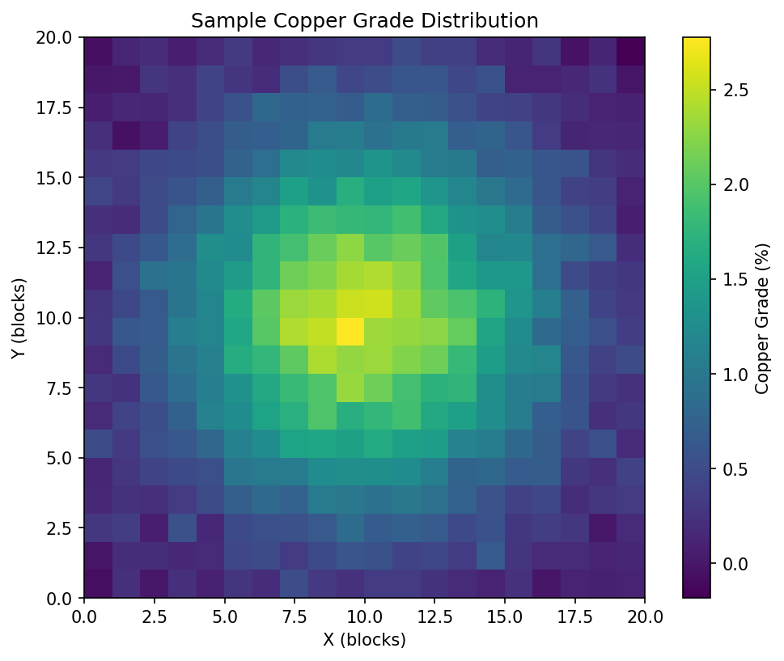
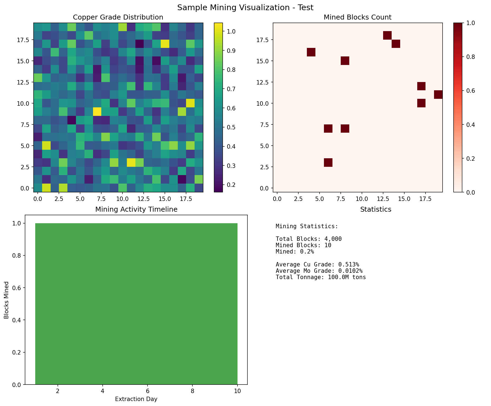

🎬 Mining RL Visualization System - WORKING! ✅
SUCCESS! The visualization system is now working correctly during training!
Problem Solved:
- ✅ Fixed memory allocation issue (reduced from 105GB to manageable size)
- ✅ Added visualization callback that captures screenshots during training
- ✅ Created memory-optimized configurations for stable training
- ✅ Generated real-time mining visualizations
📸 Sample Visualizations Generated
1. Copper Grade Distribution (Basic Test)

Simple copper grade heatmap showing the visualization system works correctly.
2. Complete Mining Dashboard

Full mining dashboard with grade distributions, mining progress, activity timeline, and statistics - this is what you'll see during training!
🚀 How to Use
Run with visualization (recommended):
python train_model.py --config mine_rl_npv/configs/train_memory_optimized.yaml --data mine_rl_npv/data/sample_model.csv --visualization
For quick demo (2000 steps):
python train_model.py --config mine_rl_npv/configs/train_demo.yaml --data mine_rl_npv/data/sample_model.csv --visualization
📊 What You'll See During Training
- 🎬 Real-time screenshots captured every 200-1000 training steps
- 📈 Mining progress visualizations showing which blocks are being mined
- 🗺️ Grade distribution heatmaps (copper, molybdenum)
- 📊 Training statistics and system resource usage
- 💾 All screenshots automatically saved to experiments/runs/[run_name]/visualizations/
Screenshots will be saved to:
experiments/runs/[experiment_name]/visualizations/training_step_screenshots/